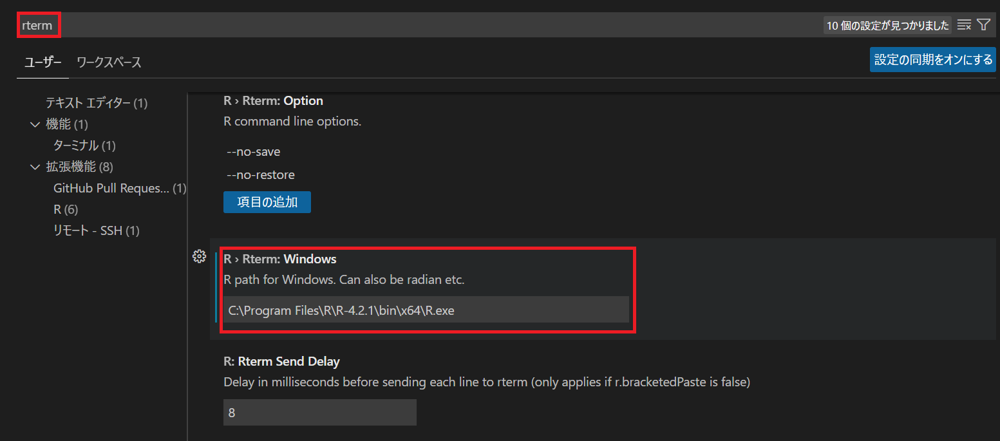
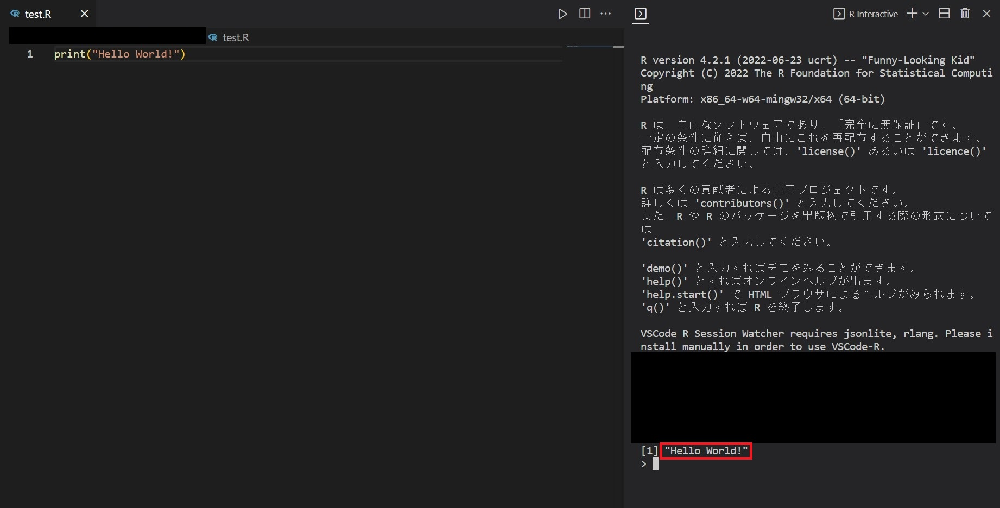

1. RとVSCodeをインストールする
- Rは インストールページにてページ上部にある"Download R for Windows" > "base"の順でDLできます。
- VSCodeは検索したら出てくると思うので適当にやってください。
2. VSCodeでRのパスを通す
- VSCode上で
Ctrl + ,を入力するとVSCodeの設定に入ります。 - 検索欄にて "rterm" と入力し、 R > Rterm: Windows の欄にRのパスを入力します。 
3. 実行
動作確認として、以下のコードを実行しました。画像赤枠を見ると、きちんと出力されていることがわかります。
print("Hello World!")